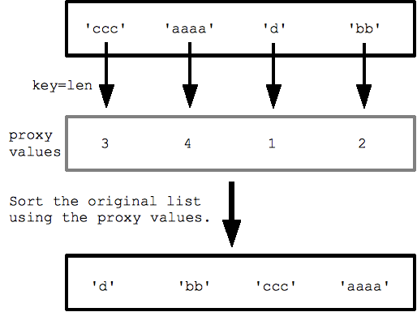

Sorting
Sorted()
- The easiest way to sort is with the sorted(list) function.
- Sorted takes a list and returns a new list with those elements in sorted order. The original list is not changed.
- Sorted can infact take as input any sort of iterable collection.
a = [5, 1, 4, 3]
print sorted(a) ## [1, 3, 4, 5]
print a ## [5, 1, 4, 3]
- The sorted() function can be customized though optional arguments.
- help(sorted) to view all the optional arguments.
strs = ['aa', 'BB', 'zz', 'CC']
print sorted(strs) ## ['BB', 'CC', 'aa', 'zz'] (case sensitive)
print sorted(strs, reverse=True) ## ['zz', 'aa', 'CC', 'BB']
Custom Sorting With key parameter
- For more complex custom sorting, sorted() takes an optional “key=”.
- “key” takes a function that transforms each element before comparison.
- The key function takes in 1 value and returns 1 value, and the returned “proxy” value is used for the comparisons within the sort.
For example with a list of strings, specifying key=len (the built in len() function) sorts the strings by length, from shortest to longest. The sort calls len() for each string to get the list of proxy length values, and the sorts with those proxy values.
strs = ['ccc', 'aaaa', 'd', 'bb']
print sorted(strs, key=len) ## ['d', 'bb', 'ccc', 'aaaa']
